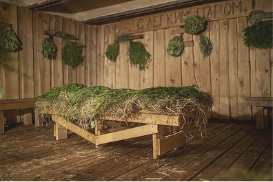
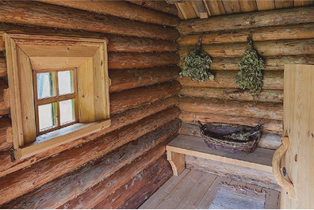
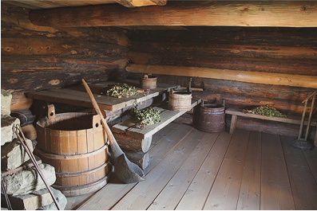

О лесной парной
«Лесная парная» — место, где природа и традиции сливаются воедино! Мы всегда славились высоким качеством своего пара и неповторимой атмосферой.

Парная 1, Кудрово

Парная 2, Мурино

Парная 3, Шушары
Почему выбирают «Лесную Парную»
- Аутентичные бани: Каждая наша баня построена с учетом традиций и особенностей нашей Русской культуры. Массивные деревянные конструкции и уютные интерьеры создают идеальные условия для отдыха.
- Природа вокруг: Наша территория расположена в живописном лесном массиве, где вы сможете насладиться свежим воздухом, пением птиц и звуками природы. Идеальное место для уединения и восстановления сил!
- Традиционные банные ритуалы: Мы предлагаем широкий выбор услуг — от парения с вениками до прохладных купелей.
- Комфорт и удобство: В наших банях предусмотрены все удобства для вашего отдыха. Просторные комнаты для отдыха, удобные лежаки, а также возможность приготовления пищи в печи.